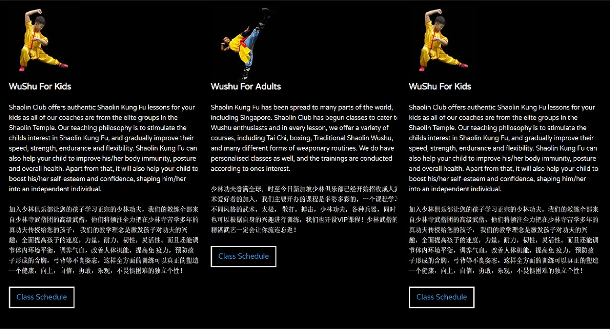

hi! 👋
I'm a freelance web developer / chatbot developer. I have a passion for web design and love to create for web and chatbot.
I like to keep it simple. My goals are to focus on typography, content and conveying the message that you want to send.
If you have a project that you want to get started and need my help, get in touch.
Interested in working together? Hire me here.
Project
